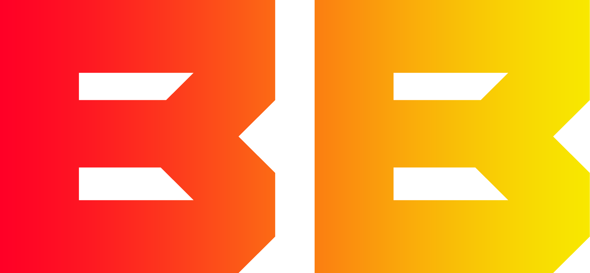
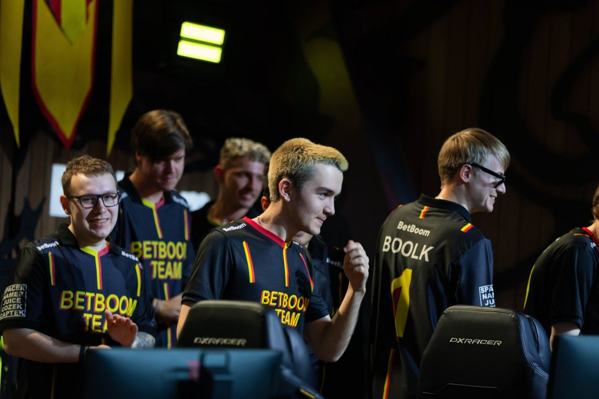

Об организации:
BetBoom Team — российская киберспортивная команда, основанная в 2022 году. В настоящее время имеет подразделения по Dota 2, Counter-Strike 2, PUBG.
18 апреля букмекерская компания BetBoom сообщила о подписании команды по Dota 2. В состав BetBoom Team вошли бывшие игроки Winstrike Team: Никита «Daxak» Кузьмин, Денис «Larl» Сигитов, Евгений «Noticed» Игнатенко, Максим «Forcemajor» Мерецкий, Акбар «SoNNeikO» Бутаев, а также тренер коллектива Андрей «Mag» Чипенко. Менеджером новой команды стал Лука «Lukawa» Насуашвили
В декабре BetBoom Team объявила новый состав по Dota 2. К команде присоединились: Иван «Pure» Москаленко, Данил «gpk~» Скутин, Егор «Nightfall» Григоренко, Виталий «Save−» Мельник, Александр «TORONTOTOKYO» Хертек. Должность тренера коллектива занял Анатолий «boo1k» Иванов
Также компания BetBoom является организатором турниров по Dota 2 и Counter-Strike серии BetBoom Dacha
DOTA 2
ESL One Birmingham 2024 - 2 место
DreamLeague Season 22 - 2 место
BetBoom Dacha Dubai 2024 - 3 место

Текущий состав команды, их позиции и дата присоединения к команде :
Егор 'Nightfall' Григоренко --- Керри --- 2022-12-08
Данил 'gpk' Скутин --- Мидер --- 2022-12-08
Матвей 'MieRo`' Васюнин --- Оффлейнер --- 2024-01-11
Виталий 'Save' Мельник --- Частичная Поддержка(капитан) --- 2022-12-08
Александр 'TORONTOTOKYO' Хертек --- Поддержка --- 2022-12-08
Анатолий 'boolk' Иванов --- Тренер --- 2022-12-08
Counter-Strike 2
В Counter-Strike команде еще не покорялись турниры высокого уровня
Текущий состав команды, их роли и дата присоединения к команде :
Владислав 'nafany' Горшков --- Опорник(Капитан) --- 2023-07-31
Александр 'KaiR0N-' Анашкин --- Риффлер --- 2023-07-31
Павел 's1ren' Оглоблин --- Опорник --- 2023-07-31
Александр 'zorte' Загодыренко --- Снайпер --- 2023-07-31
Кирилл 'Magnojez' Роднов --- Риффлер --- 2024-03-21
Артём 'RAiLWAY' Градович --- Тренер --- 2024-03-21